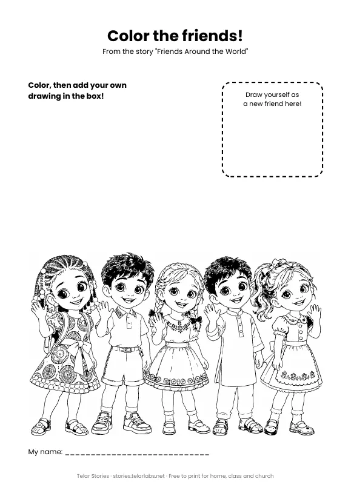
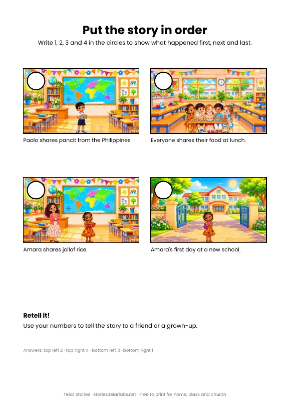
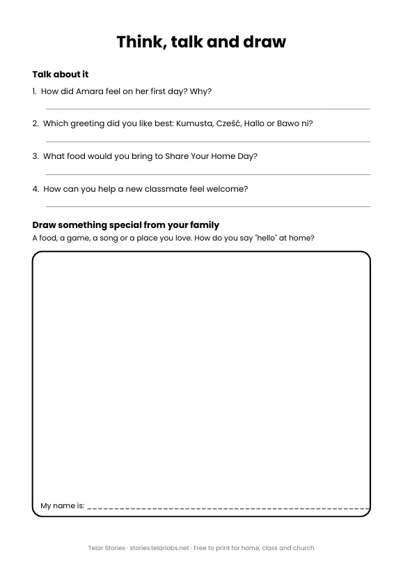

Friends Around the World
A free narrated picture-book story about Amara’s first day at a new school and a class that shares hello and food from around the world, with a printable coloring page, sequencing sheet and discussion questions.
▶ Open this story in Telar Stories
The story
It’s Amara’s first day at a new school. Her family has just moved from Nigeria, and she doesn’t know anyone. Her teacher, Ms. Rose, announces Share Your Home Day. The next day, Paolo says “Kumusta!” and shares pancit, Zofia says “Cześć!” and shares pierogi, Ayaan says “Assalam-o-alaikum!” and shares samosas, and Lena says “Hallo!” with a soft pretzel. Then it’s Amara’s turn: “Bawo ni!” She shares jollof rice, everyone loves it, and at lunch they share all their food. Amara laughs for the first time all week.
What it teaches
We come from different places, but a smile means hello everywhere. The story helps children welcome new classmates, be curious about other cultures, and see that sharing something from home can turn strangers into friends.
Before the story
- How do you feel on the first day at a new place?
- How do you say “hello” in another language?
- What food does your family make for special days?
After the story: questions to talk about
- Why was Amara shy at the start?
- What is Share Your Home Day?
- Which greetings did the children say? Can you say them?
- What foods did they share?
- How did Amara feel at the end? Why?
- How can you help a new classmate feel welcome?
Free printable activity pack
Three pages to print at home, in class or at church. Black-and-white friendly, A4 and US Letter.

A coloring page with the five friends waving hello.

Four pictures from the story to number 1 to 4, then retell. Answers at the bottom.

Four questions and a big box to draw something special from your family.
⬇ Download the printables
Activities to try
- Hello wall: make a poster of “hello” in all the languages your class or family knows.
- Share Your Home Day: hold your own day where each child brings a photo, a food or a song from their family.
- Map it: find Nigeria, the Philippines, Poland, Pakistan and Germany on a map or globe.
- Welcome buddy: talk about what a good welcome buddy does for a new classmate.
Make it your own
Open the story in Telar Stories and change anything: your child’s name, the words, the music or the voice. You can record your own voice for each scene and save the finished story as an MP4 video to share with family. See Make your first story video.
Free to use: print as many copies as you need for your family, class or church. Please don’t sell them.